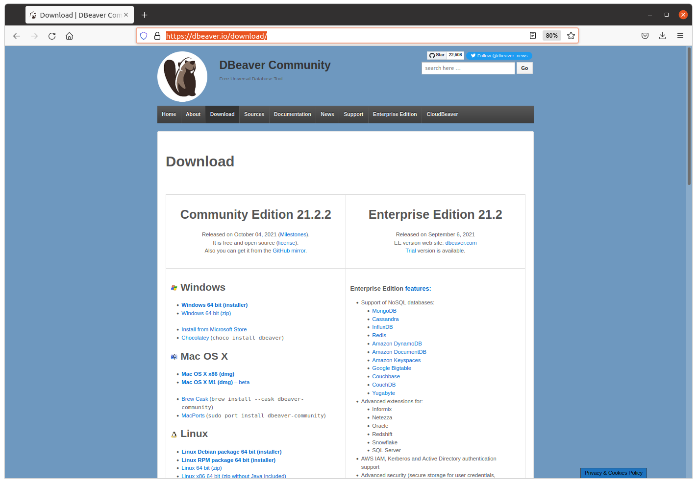
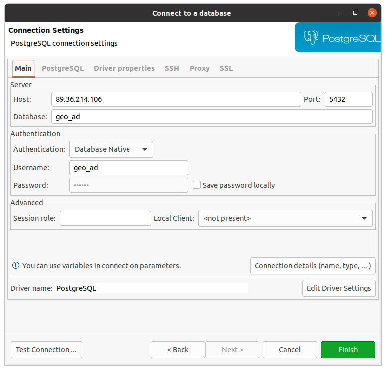
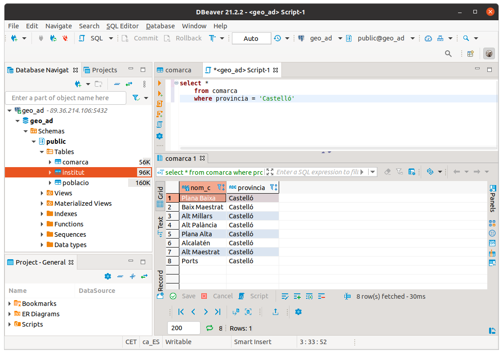
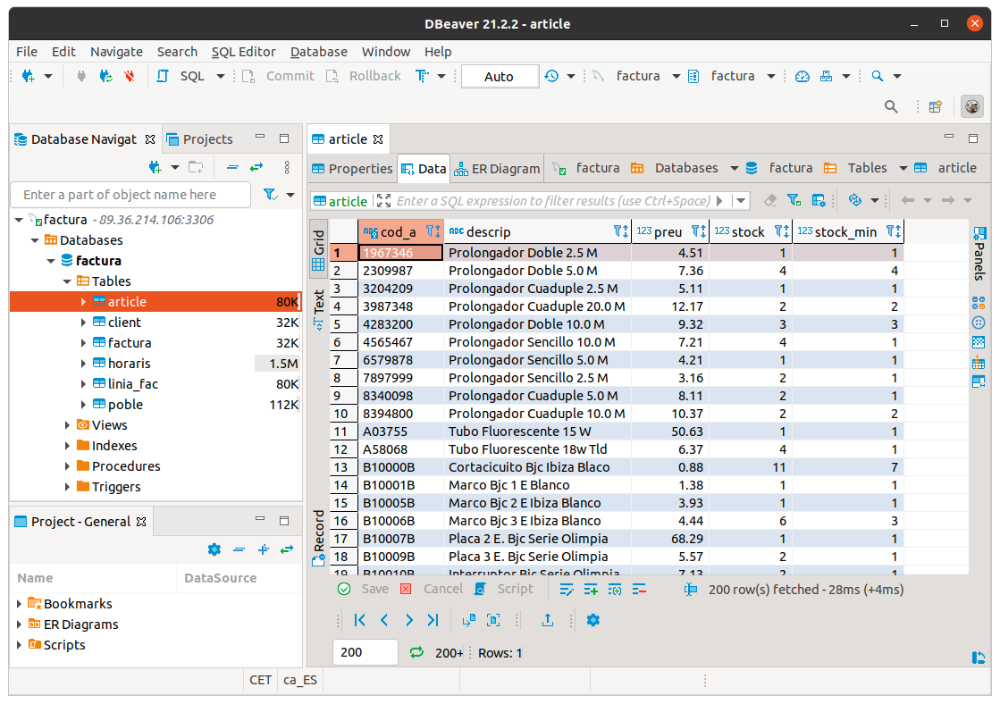
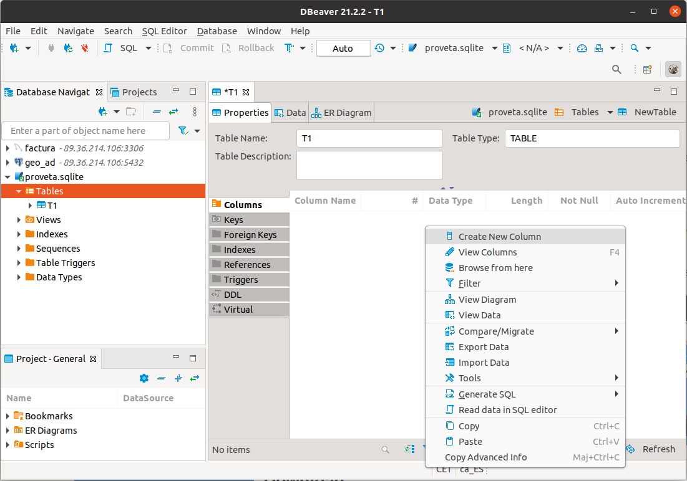

4 - "Tocar" les dades¶
Abans de començar a treballar la persistència en diferents Bases de Dades Relacionals, ens convindrà accedir al Sistema Gestor de Base de Dades per a poder veure les dades, treballar amb elles.
Bàsicament voldrem:
- Poder veure les taules de la Base de Dades
- Poder veure l'estructura de cada taula: camps, tipus dels camps, clau principal, ...
- Poder veure les dades d'una taula, fins i tot poder indroduir noves files, esborrar o modificar de forma còmoda
- Poder editar i executar sentències SQL de forma còmoda
L'entorn d'IntelliJ ens proporciona una eina ja instal·lada, Database , a la qual es pot accedir des de View - > Tool windows -> Database. És una bona manera de poder connectar i "tocar" les dades sense tenir un client específic del Sistema Gestor de Base de Dades al qual volem accedir.
Però està clar que si disposem d'un client específic del SGBD, serà més còmode que amb la perspectiva anterior. Per això veurem una eina que ens permet connectar a quasi tots els Sistemes Gestors de Bases de Dades Relacionals, i per tant amb una única eina podem connectar on vulguem. És el DBeaver.
4.1 - Des de IntelliJ¶
Des dels programes Java o Kotlin podríem connectar ja mateix a les diferents BD amb els connectors JDBC, però abans ens faria falta poder veure les taules amb les dades i fins i tot administrar aquestes Bases de Dades.
Això es pot fer des d'IntelliJ sense molt fàcilment, ja que en la nostra versió ho tenim integrat per defecte. Utilitzarem els connectors (drivers) JDBC, per a connectar a les Bases de Dades, però d'una forma independent dels projectes. La manera d'accedir és:
Wiew -- > Tool Windows --> Database
i se'ns obrirà una subfinestra a la dreta per a poder "treballar" amb les Bases de Dades

Des d'aquesta finestra podrem controlar les connexions a Bases de Dades i també els Drivers JDBC que ens permeten connectar. Com hem comentat serà independent dels projectes Java o Kotlin
Connexió a PostgreSQL
Com a primer exemple de connexió, intentarem connectar a PostgreSQL. Farà falta especificar:
- Les dades de connexió, que seran:
- Servidor (host): 89.36.214.106
- Port: 5432 (és el port per defecte)
- Usuari: geo_ad
- Contrasenya: geo_ad
- Base de dades: geo_ad
-
En el moment que demana pel controlador (driver) de PostgreSQL, apretar a baixar. Serà un de tipus IV. Açò només serà necessari la primera vegada que connectem a PostgreSQL.
De la configuració anterior podem observar la URL de connexió que va a continuació. És important, perquè després quan connectem des dels nostres programes Java, haurem d'especificar-la també. Haurem de substituir servidor per l'adreça IP o el nom del servidor, la base_de_dades per la base de dades a la qual ens volem connectar.
URL de PostgreSQL
jdbc:postgresql://_servidor_ :5432/_base_de_dades
que en el nostre exemple ha quedat:
jdbc:postgresql://89.36.214.106:5432/geo_ad
Connexió a MySQL
Repetim el procés per a MySQL. El servidor està en la mateixa màquina que PostgreSQL (89.36.214.106). L'usuari amb que connectarem ara es diu factura. Haurem d'especificar:
- Les dades de connexió, que seran:
- Servidor: 89.36.214.106
- Port: 3306
- Usuari:factura
- Contrasenya: factura
- Base de dades: factura
-
Quan demane pel controlador (driver) de MySQL, haurem d'apretar a baixar. Açò només serà necessari la primera vegada que connectem a MySQL
URL de MySQL
jdbc:mysql://_servidor_ :3306/_base_de_dades
que en el nostre exemple queda:
jdbc:mysql://89.36.214.106:3306/factura
Connexió a SQLite
SQLite és un SGBD molt diferent als anteriors. En tots els anteriors s'utilitza l'arquitectura client-servidor. I per tant el servidor de Base de Dades no té per què estar en la mateixa màquina.
Però en moltes ocasions ens pot venir bé un SGBD molt més xicotet i senzill que guarde la BD en la mateixa màquina, que siga monousuari i que pese molt poc.
SQLite és un SGBD multiplataforma (podrem fer-lo rodar en qualsevol plataforma) que és molt lleuger. Admet la major part de l'estàndar SQL-92. I guarda una Base de Dades en un únic fitxer. Una altra característica és que des de Java o Kotlin, amb el driver JDBC podrem accedir a les Bases de Dades SQLite sense que faça falta cap motor de Base de Dades. Per tant és ideal com a Base de Dades que puguem copiar a les nostres aplicacions.
Quan connectem des de IntelliJ ara no caldrà especificar on està el servidor ni quin usuari s'ha de connectar. Haurem de dir el fitxer amb la ruta on està (o estarà) la Base de Dades. Per tant només haurem d'especificar:
- Les dades del fitxer: ruta i nom. La ruta ha d'existir. Si el fitxer no existeix, el crearà.
-
Quan ens diga baixarem el Driver. Això només ens caldrà la primera vegada que connectem amb SQLite
URL de SQLite
jdbc:sqlite:ruta_del_fitxer_sqlite
Com hem comentat, SQLite és més senzill que els altres SGBD. Concretament, els tipus de dades que utilitza són:
-
INTEGER. El valor és un enter amb signe, que ocupa 1, 2, 3, 4, 6, o 8 bytes depenent de la grandària del valor.
-
REAL. El valor és un número real en coma flotant que ocupa 8 bytes (doble precisió).
-
TEXT. El valor és una cadena de caràcters que pot estar codificada en UTF-8, UTF-16BE o UTF-16LE, depenent de la codificació de la Base de Dades. No ens preocuparem de la codificació interna.
-
BLOB. Per a guardar dades binàries que es guardaran exactament com entren, sense mirar el format.
Des de l'entorn d'IntelliJ podrem visualitzar les taules i fins i tot crear- les, amb SQL.
4.2 - DBeaver¶
Ja hem vist la utilitat d'inspeccionar les Bases de Dades que ens proporciona IntelliJ, i que ens permet accedir a les Bases de Dades per veure l'estructura i les dades de les taules, fins i tot, fer i executar sentències SQl. Però no és excessivament còmoda.
Els Sistemes Gestors de Bases de Dades tenen clients específics per a poder treballar amb les seues Bases de Dades.
Però hi ha un altre software, lliure, anomenat DBeaver que ens permet connectar a quasi totes les Bases de Dades Relacionals, i fins i tot a moltes BD NoSQL en la seua versió comercial (Enterprise Edition). Nosaltres utilitzarem la que sí que és de codi obert, la Community Edition.
Ens ho podem baixar des de la seua pàgina de descàrregues, https://dbeaver.io/download. En el moment de fer aquestos apunts van per la versió 24.2.2

La seua instal·lació no ofereix cap dificultat. En concret, per a Ubuntu, ens ofereix un paquet Debian, que senzillament hem d'instal·lar com a superusuari.
Aquest és el seu aspecte:

Anem a crear una connexió a PostgeSQL, una altra a MySQL i una altra a SQLite.
Quan creem una nova connexió ja podem veure que es pot fer a molts SGBD. En la primera pantalla ja tenim els 3 que volem nosaltres, però hi ha molts més
Quan li faça falta un Driver (que per cert seran drivers JDBC) ens preguntarà de baixar-lo automàticament, per tant serà comodíssim.
PostgreSQL
Aquestes són les dades de connexió que farem:
- Nom de la connexió: el que vulguem, per exemple geo_ad
- Host: 89.36.214.106
- Port: 5432 (és el port per defecte)
- Database: geo_ad
- Usuari: geo_ad
- Contrasenya: geo_ad
- I en la pestanya PostgreSQL cuidem de no tenir seleccionada l'opció Show all databases , ja que és inútil mostrar Bases de Dades a les quals no tindrem accés
|  |  |
|---|---|
Una vegada creada la connexió podrem navegar fins les taules, i en seleccionar una veurem en 3 pestanyes l'estructura, les dades, i fins i tot un esquema de l'estil del Model Entitat-Relació (encara que en realitat representa el Model Relacional) on intervé la taula, és a dir, ens mostra les seues claus externes.
 |
 |
 |
|---|---|---|
Finalment observem com també podem executar sentències SQL de forma molt còmode, i on ens dóna molta ajuda per escriure correctament les paraules reservades i també les taules i camps de la nostra BD

MySQL
- Nom de la connexió: el que vulgueu, per exemple Connexio MySQL factura
- Servidor: 89.36.214.106
- Port: 3306
- Base de dades: factura
- Usuari: factura
- Contrasenya: factura

La seua utilització és igual de fàcil que en l'anterior cas.

SQLite
La connexió a SQLite és més senzilla i per tant ens preguntarà menys coses:
- Nom de la connexió
- Ruta i nom del fitxer

L'entorn serà totalment similar als dels casos anteriors. Però en aquesta Base de Dades de prova, proveta.sqlite no teníem cap taula:

Aprofitem per a crear una taula, per veure que és molt fàcil i còmode. Crearem una taula T1 amb 2 camps, c1 numèric, i c2 de text.
Potser el menys intuïtiu és la manera de crear els camps de la taula. Serà apretant amb el botó de la dreta en la zona de les columnes.

En les següents imatges es veu com es creen 2 camps. La tercera és en el moment de guardar la taula, i podem comprovar que el que fa és generar una consulta SQL
 |
 |
|
|---|---|---|
Llicenciat sota la Llicència Creative Commons Reconeixement CompartirIgual 2.5